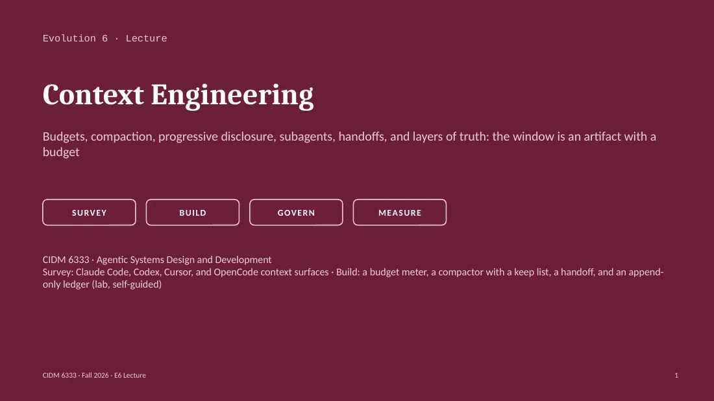

Budgets, compaction, progressive disclosure, subagents, handoffs, and layers of truth: the window is an artifact with a budget
Textbook: Chapter 8 (survey) · Chapter 15 (build) · Chapter 25 (method) · Glossary
CIDM 6333 · Agentic Systems Design and Development
What the model knows this turn is in the window. Nothing else exists for it. Content that entered by accident still costs attention.
Measure every turn: the provider's count against a declared budget.
What must survive goes to a file: ledger for decisions, canon for rules.
The design claim Sortie 6 tries to disprove
A handoff lets a fresh session resume: its first action is the handoff's first next step. Falsified if the fresh session asks a question the handoff answered, an L3 view overrules the ledger, any turn lacks a budget record, or the old transcript was pasted.
| Category | Who puts it there | Grows with | After /compact in Claude Code (documented) |
|---|---|---|---|
| System prompt, tool definitions | The harness | Tools enabled; MCP servers (names only while deferred) | Reloaded |
| Instruction files (AGENTS.md, CLAUDE.md, rules) | You | Every line you add; imports load in full | Reloaded from disk |
| Skill descriptions | You, plugins | Skills installed | Listing not reloaded; invoked skill bodies re-injected, 5,000 tokens each at most |
| Conversation history | You and the model | Every turn | Replaced by one structured summary |
| Tool results (reads, test output, pages) | The tools | Every call; one log file can be tens of thousands of tokens | Full outputs gone; up to five recently modified files re-read |
| Retrieved memory and notes | Your code | What you choose to retrieve | Auto memory reloaded; the rest only if your code reloads it |
The last column matters for Sortie 6: compaction turns what you said only in conversation into a summary.
models tested (Chroma, Jul 2025); all less reliable as input grew
where long-context accuracy is lowest (Liu et al., TACL 2024)
token-pair relations: the 'attention budget' (Anthropic, Sep 2025)
fewer tokens with context editing, 100-turn eval (Anthropic, 2025)
Declare a turn budget below the window; past 80%, clear, compact, delegate, or hand off. Big Pickle's window is unpublished: declare and hold a budget.
Anthropic (Sep 2025): 'the set of strategies for curating and maintaining the optimal set of tokens (information) during LLM inference.'
Declare the budget before you fly. Log the count the provider returned rather than your own estimate.
u = resp.usage # the provider's count, not your estimate
total = u.prompt_tokens + u.completion_tokens
rec = {"event": "turn_budget", "turn": t,
"in": u.prompt_tokens, "out": u.completion_tokens,
"total": total, "budget": BUDGET,
"pct": round(100 * total / BUDGET)}
ledger.append(rec) # one JSON object per line, never edited
if total > 0.8 * BUDGET:
history = compact(history, keep=KEEP)
Field names differ: OpenAI-compatible endpoints (Ollama's /v1, most gateways) return prompt_tokens and completion_tokens; Anthropic's API returns input_tokens, output_tokens, and cache fields counted separately.Which turn and session.
Tokens in and out, as the provider counted them.
The declared budget and the percentage used.
By category where you can; label estimates.
What the loop did: nothing, clear, compact, delegate, hand off.
The record is L2; the counter is L3.
If the provider returns no usage, declare a fallback count before Go; discovered in flight, ABORT.
1
2
3
4
Drop old tool results; keep the record of the call. Anthropic: tool result clearing; OpenCode: compaction.prune. Loses raw output only.
A model writes a structured summary: objective, decisions, files, errors, pending work. Lossy by design; the summarizer chooses what is lost unless you do.
A declared keep list survives untouched: objective, open test point, last few turns, pointers to canon. You write the list.
After the summary, reload L1 files and the ledger tail. Claude Code reloads CLAUDE.md and re-reads up to five recently modified files.
Knobs: Claude Code /compact [focus], /autocompact, PreCompact hook (exit 2 blocks) · Codex /compact, model_auto_compact_token_limit, compact_prompt · OpenCode /compact, compaction.auto / prune / reserved
Name and description sit in context; the body loads on invocation (OpenCode's skill tool; Claude Code). E5 moved procedures into skills; the lab counts the saving.
Keep identifiers, not contents: a path, a query, a ledger event id. Load content at runtime (Anthropic, Sep 2025). A handoff points at evidence.
Verbose work stays in the child's window; a summary returns, often 1,000–2,000 tokens (Anthropic). The summary is a claim; the child's evidence stayed in its window.
Anthropic calls this 'just in time' context. LangChain's four verbs (Jul 2025): write, select, compress, isolate.
1 Current state; commit hash.
2 Important context. What a stranger gets wrong.
3 Decisions, with attribution.
4 Next steps; the first is one action.
5 Pending work; blocked, and on what.
6 Verification checklist; commands that prove the state.
7 Evidence; pointers, not pastes.
Session-start advisement. The harness reads the handoff before turn one (Claude Code: SessionStart hook).
Rulings store. Settled decisions, append-only; never re-asked.
Exit bookmark. The last action and the resume point.
In the wild. Anthropic's harness (Nov 2025): progress file, JSON feature list, git log.
The test: a stranger with no transcript takes the action you listed first and asks nothing you answered.
| Layer | What it is | In your system (example paths) | Rule |
|---|---|---|---|
| L1 canon | Markdown written by people: PRD, ADRs, AGENTS.md, flight cards, the handoff template | docs/prd.md · docs/adr/ · AGENTS.md · evolution-*/flight-card.md | Changes by commit and review |
| L2 ledger | Append-only events the system wrote when things happened | var/ledger.jsonl: turn_budget, compaction, handoff_written, session_resumed | Never edited; a correction is a new event |
| L3 derived | Views computed from L1 and L2: status pages, summaries, frontmatter, markers, on-screen counters | status.md · the compaction summary · a drafted handoff · the TUI's token counter | Regenerable; can never block a gate |
Precedence L2 > L1 > L3. 'Frontmatter can lie; the ledger is the truth.' (gzkit state doctrine, docs/governance/state-doctrine.md, ADR-0.0.9)
Where does a compaction summary sit? L3. It may inform the next turn; it may not overrule the ledger.
A rule typed in conversation lives in history, which compaction summarizes. Claude Code reloads CLAUDE.md after /compact, not what you typed.
Fix. Put the rule in canon (L1) or the ledger (L2).
App. C #5 correction fails
File size, or a session total, reported as context. OpenCode's session totals add every turn's cache reads (issue #30649).
Fix. Log per call from the provider's usage fields.
App. C #4 skipped cheap verification
‘Made good progress on the loop; continue tomorrow.’ No next action, no names, no evidence. The fresh session guesses.
Fix. Seven sections; the first next step is a command.
Human-side: summary laundering
Each fix moves a fact out of the window and into a file the next session reads on purpose.
| Surface | Claude Code | Codex CLI | Cursor | OpenCode (yours) |
|---|---|---|---|---|
| Instruction file | CLAUDE.md hierarchy; reads AGENTS.md itself since v2.1.277 when no CLAUDE.md | AGENTS.md root → cwd, concatenated; stops at 32 KiB (project_doc_max_bytes) | .cursor/rules (.mdc: always, intelligent, globs, manual); nested AGENTS.md | AGENTS.md walking up; CLAUDE.md as fallback; first match wins |
| See the window | /context: grid by category, with warnings | /status: tokens used and context remaining | TUI counters; opencode export JSON; opencode stats | |
| Compaction | Auto at the auto-compact window (/autocompact); /compact [focus]; PreCompact hook | Auto at model_auto_compact_token_limit; /compact; compact_prompt override | Summarizes when full; history kept as a file the agent can search | compaction.auto when full; reserved buffer; prune old tool output; /compact |
| Keep it out | Skills on demand; MCP deferred; subagents in fresh windows | tool_output_token_limit (sample: 12,000 per output) | Tool output, terminals, MCP tools as files | Skill tool; explore and general subagents in child sessions |
Sources retrieved September 24, 2026: code.claude.com docs (memory, commands, model-config, hooks); developers.openai.com/codex (slash commands, config sample, AGENTS.md guide); cursor.com docs and blog (Jan 6, 2026); opencode.ai docs (config, TUI, CLI, agents, skills).
System prompt, CLAUDE.md, auto memory, MCP tool names: reloaded.
Up to five recent files: re-read.
Invoked skills: re-injected, 5,000 tokens each.
Skill listing: not reloaded.
Conversation: one structured summary; tool outputs and reasoning gone.
Auto-compaction: 1M-window Sonnet 5 compacts at about 967K by default.
Design choice. Files reload; conversation is summarized. Write what matters down.
Cost. Detail is gone; /compact is itself a large request.
Failure mode #5: a chat-only correction survives as paraphrase.
Control points. /compact Focus on …; 'Compact instructions' in CLAUDE.md; PreCompact hook; SessionStart matcher compact.
The harness already implements rule two: files reload, chat does not. Your loop should too.
AGENTS.md from the Git root down to the working directory, concatenated; closer files override. Reading stops at 32 KiB by default.
/compact summarizes; auto-compaction at model_auto_compact_token_limit. On the Responses API, compaction returns an encrypted item passed back as is.
Choice. A hard byte cap on instructions, and server-side compaction that keeps reasoning state the client never sees.
Cost. Files past 32 KiB are not read; the most specific guidance goes first. The compaction item is 'opaque and not intended to be human-interpretable'.
Human-side: mediated observation. The Chase cannot read the summary; a pass rests on what the model says it remembers.
Design Analysis question. If your record of what was kept is unreadable, where does evidence of intent live? Your own ledger.
Sample config: # model_auto_compact_token_limit = 64000 · # tool_output_token_limit = 12000 · project_doc_max_bytes default 32768
Long tool outputs, terminals, and MCP tool descriptions become files; names first. During summarization the agent searches the chat history as a file.
Project rules in .cursor/rules as .mdc: Always Apply, Apply Intelligently, Apply to Specific Files (globs), Apply Manually. 'Keep rules under 500 lines.' Nested AGENTS.md applies.
Choice. Nothing is dropped; it moves to disk for the agent to grep. 46.9% fewer tokens in MCP-tool runs.
Cost. Every recovery is a tool call the model must think to make.
'Apply Intelligently' loads a rule only when the model judges it relevant. An every-turn rule placed there is wishful (E5 Probe 2). App. C #4: the cheap lookup skipped.
{
"compaction": {
"auto": true,
"prune": false,
"reserved": 10000
}
}
auto: compact when context is full (default true).
prune: remove old tool outputs (default false).
reserved: token buffer so compaction itself does not overflow.
/compact (alias /summarize) by hand; a hidden compaction agent writes the summary.
v2 (beta) renames these keys; check your version's docs.Measure. No /context grid: TUI counters, opencode stats, opencode export <session-id> (token counts per assistant message).
Isolate. Explore and general subagents run in child sessions.
Open question. Auto-compaction fires at model limit minus output reserve. Big Pickle's window is unpublished: what limit does OpenCode use?
Big Pickle publishes no window size, so the budget you declared and logged per turn is the only limit you can check.
“Compaction isn’t sufficient.” Every session starts as a stranger.
Mechanism. An initializer writes init.sh, claude-progress.txt, and a 200+ feature JSON list. Each session reads them, works one feature, commits.
Choice. JSON over Markdown: overwritten less. Cost: one feature per session.
Failure mode. App. C #9, metagaming: flip a status, never rewrite the list.
| Component | Answer (a draft to argue with in class) |
|---|---|
| Foundation | Claude models with 200K to 1M windows; auto-compact window tuned per model, adjustable 100K–1M |
| Perception | User turns, file reads, tool results, hook additionalContext, SessionStart output |
| Planning & reasoning | Extended thinking; plan mode before edits |
| Tools & orchestration | Built-in tools; MCP schemas deferred behind tool search; skills listed, bodies on demand |
| Memory & context | CLAUDE.md hierarchy; auto memory (first 200 lines or 25KB); /context; files reload, chat does not |
| Coordination | Subagents in fresh windows; a summary returns; nesting up to three layers by default |
| Evaluation & feedback | /context warnings; /usage prompt-cache line counts misses and expected rebuilds after compaction |
| Governance & human interface | Permissions; hooks: PreCompact can block (exit 2), SessionStart can re-inject after compaction |
| Runtime & operations | Terminal, IDE, cloud; prompt cache 5-minute or 1-hour lifetime; a compaction rebuilds the cache |
Judgment loop: Decision (files reload, chat summarized) · Characteristics privileged (a small, fresh window) · Cost (detail; an expensive compaction call) · Failure mode (#5) · Preservation (the reload list; the hooks).
L1 canon: Markdown (ADRs, rules, AGENTS.md).
L2 ledger: append-only events, the runtime truth.
L3 derived: status, markers, frontmatter.
Precedence L2 > L1 > L3; L3 blocks no gate.
'Frontmatter can lie; the ledger is the truth.'
Which of your files is L3, treated as truth?
gz handoff create / resume: the seven-section handoff.
.gzkit/handoffs/rulings.jsonl: settled rulings, append-only.
scripts/session_orientation.py: what a session reads before turn one.
By 2026-06-20, 116 handoffs; the 'utter shambles' audit counted them.
The ledger outranks the prose that describes it, and both outrank anything computed from them.
commits behind: the clone a session oriented itself on
lines discarded by the hard reset that reconciled it
check added at SessionStart: ahead/behind, before the first turn
What happened. A clone ten commits behind; a hard reset discarded about 215 lines.
What resulted. A SessionStart ahead/behind check before any work; orientation states its freshness.
For your system. The handoff records a commit; resume checks the tree is at it first.
An agent re-elicited three settled rulings by multiple choice. Rule: 'A settled question is a drift vector.' Settled answers load at session start from the rulings store.
Your handoff's Decisions section
Four questions bundled into one prompt. Result: operator economy of effort, one question at a time, only questions the record cannot answer.
Your fresh session's first turn
AGENTS.md rendered from the corpus (ADR-0.0.37), 'lowest amount of faith in AGENTS.md'; map, not encyclopedia (ADR-0.0.54) after the 258K exhaustion.
All three episodes end the same way: a fact the session kept asking for gets written where the next session reads it first.
Budget reported as file size or a session total
Compaction at harness default; no event, no keep list
Handoff is a paragraph: no next action, no names
Resume 'tested' by pasting the old transcript
README says 'the ledger is the truth' with no paths
One budget record per turn, from provider usage fields
Compaction with a keep list; tokens before and after logged
Seven-section handoff; first next step is one action
Fresh session's first action matches; nothing re-asked
L1/L2/L3 with paths; a planted stale L3 loses to the ledger
Budget by category; one category cut, before and after
Compaction summary checked against the ledger; dropped decision pinned
Handoff generated from the ledger (L3 of L2); fidelity checked
A settled ruling stays settled; not re-asked
Same handoff resumed on a second model family; difference explained
ENVELOPE expansion
DESIGN CLAIM A handoff written at session end lets a fresh session resume with no loss of intent:
the fresh session's first action is the handoff's first next step.
SYSTEMS UNDER TEST budget meter · compactor + keep list · handoff writer · resume loader · runtime ledger
· layers-of-truth declaration (README)
SUBSTRATE repo + commit · model/route + declared turn budget · harness + version
DEPENDS ON Sortie 5 PASS (server hardened; AGENTS.md under budget and measured)
TEST POINTS
1 session A runs a bounded task, >= 6 turns → one turn_budget record per call {turn, in, out, total, budget}
2 context crosses the compaction threshold → compaction event {before, after, kept[]}; objective and L1
pointers present after; task continues
3 session A ends → handoff.md (7 sections) + handoff_written event with hash
4 fresh session B loads handoff + L1 + ledger → first action == handoff NEXT STEP 1; zero questions the
(no transcript) handoff answered; session_resumed event
5 planted stale L3 view contradicts ledger → B follows the ledger; conflict logged; L3 blocks nothing
INSTRUMENTATION budget log (every call) · ledger diff (compaction, handoff_written, session_resumed)
· handoff.md + hash · B's first two turns captured verbatim
PRE-REGISTERED FALSIFIERS (any ONE ⇒ FAIL)
- B asks a question the handoff answered, or takes a first action the handoff did not list
- an L3 view contradicts the ledger and wins
- any call with no budget record, or a compaction with no event
- passing by pasting A's transcript into B, or by editing the handoff after B starts
ABORT (halt-not-fail) provider returns no usage fields and no fallback count declared; model unavailable
CHASE reads budget log, ledger diff, handoff.md, B's first two turns; never the author's summary
SPRINT Sortie 6 log · budget + compaction + handoff + ledger · layers in README · DA · AI_LOGMeasure every turn, decide what compaction may lose before it runs, and hand off to a stranger. Lab: measure one session and resume it from your own handoff.

Arrow keys step through the slides. "As presented" shows the slide image from the original deck, and "Figure" opens the interactive figure a slide refers to. The panel above is the lecture written out for the slide on screen. Read this lecture, below, has the whole lecture in slide order. Names that appear without introduction link to the glossary.
The speaker notes follow here slide by slide, each under its slide. Click a slide image to open it in the viewer above.
Evolution 6. Over the last five Evolutions the window filled without your attention: tool results in E3, MCP resources in E4, the AGENTS.md you measured in E5. The framing sentence of the deck is that the window is an artifact with a budget, which you design and measure. The survey covers how four harnesses decide what enters the window, what compaction removes, and what a handoff carries; the teardowns read Claude Code, Codex, and Cursor for mechanism, and OpenCode because it is the harness you fly. The build adds four things to your system: a budget record on every turn, a compactor that keeps what you declared, a handoff a stranger can resume from, and an append-only ledger. The E5 Sprint asked you to re-measure what your harness loads from AGENTS.md. That number is the starting point.
Framing. On any turn the model has the window and nothing else: the system prompt, the instruction file, the history, the tool results, whatever you retrieved. Two rules hold for the whole lecture. First, measure the window every turn, with the provider's own count against a budget you chose; in E5 some of you reported a file size, and a file size is not what the model loaded. Second, what must survive goes to a file, because the conversation is the part that compaction and a new session discard. The design claim comes from Chapter 15: a handoff lets a fresh session resume with no loss of intent, measured by one observation, whether the fresh session's first action is the handoff's first next step. The card lists four falsifiers. The last one is the shortcut: pasting the old transcript into the new session fails the test, because the test asks whether the handoff alone carried the intent.
Six categories. The harness writes the system prompt and the tool definitions. You write the instruction files and the skills. You and the model together write the history. The tools write the results, and one test run or one log file can be tens of thousands of tokens. Your code decides what memory comes back. The last column is Claude Code's documented behavior after compaction: files reload from disk; the skill listing does not come back; invoked skills come back capped; the conversation becomes one summary. For this reason a rule you typed in chat on turn three is, after compaction, whatever the summarizer chose to write about it. Codex and OpenCode do not publish this table, so the lab measures their behavior instead of reading it.
Why a budget when the context window is a million tokens. Four numbers answer. Chroma tested eighteen models in July 2025 and found that performance became less reliable as input length grew, on tasks as plain as finding a sentence. Liu and colleagues (TACL 2024) showed the U-curve: models use the start and the end of a long input better than the middle. Anthropic frames the window as an attention budget, because every token relates to every other token and the pair count grows as n squared. The fourth number is the payoff: Anthropic's context editing, which clears stale tool results, cut tokens by eighty-four percent on a hundred-turn search task and let runs finish that otherwise ran out of window. The design consequence follows: the window is the provider's limit, the budget is your design decision below it, and for Big Pickle there is no published limit at all, so the budget you declare is the only number you have.
The instrument. Ten lines of Python run after every model call: read the usage object the provider returned, compute the total, write a record to an append-only file, and compact when the total crosses eighty percent of the budget. The field names differ by provider, and the difference produces a wrong total unless your code checks which fields came back: OpenAI-compatible endpoints, Ollama's included, return prompt and completion tokens; Anthropic's API returns input and output tokens and counts cached tokens in separate fields, so a sum of input and output alone undercounts. The right panel lists what each record must answer; the category breakdown is what separates a sound build from an exceptional one. The last line of that panel matters: your record is the ledger, layer two; the harness's on-screen counter is a derived view, layer three. The common mistakes later in the deck return to one such counter, OpenCode's session total, which can be cumulative and not the window at all (issue #30649).
Compaction as four operations, in order of cost. Clearing drops stale tool output and keeps the record that the call happened; it is cheap, and it is the operation that bought the eighty-four percent. Summarizing hands the history to a model and gets back a shorter account; it is lossy by design, and unless you instruct the summarizer, the summarizer decides what survives. Keeping verbatim is your countermeasure: a keep list, written before the sortie, of items that pass through untouched. Re-seeding is the fourth operation: after the summary, reload the canon and the ledger tail from disk, so that the rules in the window are the file's words and not the summary's paraphrase. Each harness's own controls appear at the bottom of the slide. Your own loop needs all four operations, and Sortie 6 logs an event every time compaction runs.
Four ways to keep tokens out of the window until they are needed. Skills put a one-line description in context and leave the body on disk; you did this in E5, and the lab lets you count what it saved. Deferred tools do the same for MCP: names enter first, schemas when a task needs them, and Cursor published an A/B result of 46.9 percent fewer agent tokens in runs that called an MCP tool. Just-in-time retrieval is the general form: the window carries pointers and the loop loads content on demand, which is also how a handoff should treat evidence. Subagents isolate: the child reads the ten files and returns a summary of about a thousand tokens. The cost of isolation is the E9 lesson arriving early: the summary is a claim the parent has not checked, and the gzkit casebook holds a chain ten summaries deep in which polished summaries became facts.
Handoffs, with the seven sections from the chapter. Read the sections as the questions a stranger asks: what is true now, what will I get wrong, who decided what, what do I do first, what is half done, how do I check your claims, and where is the evidence. The first next step is one action, a command or an edit, and not a theme. The evidence section points at paths and ledger event ids and does not paste them, which is just-in-time retrieval applied to handoffs. The right panel lists the machinery that loads a handoff without anyone remembering to paste it: a session-start hook, a rulings store so settled questions stay settled, and an exit bookmark. Anthropic's long-running harness (November 2025) is the same design under other labels: a progress file, a feature list, and the git log, read first in every session.
The architecture that makes the handoff checkable. Layer one is canon: prose written by people and changed by commit. Layer two is the ledger: events the system appended when things happened, never edited. Layer three is everything derived: status pages, summaries, frontmatter, the counters on your screen. Precedence runs ledger over canon over derived, and a derived view can never block a gate, because a derived view can be wrong without anyone having lied. Two placements follow from the definitions. The compaction summary is layer three, so when it disagrees with the ledger the ledger wins. A handoff your agent drafted is layer three until you check it against the ledger. Your README declares these layers, with paths, in the Sprint.
Three mistakes, each with a failure-mode number from Appendix C. First, the chat is the memory: you correct the agent in conversation, it complies, compaction runs, and the correction becomes a clause in a summary or disappears. That is failure mode five, correction fails, and the fix is to write the correction where the harness reloads it. Second, the counter is the window: a build reports file size or a session running total as context. OpenCode has an open issue (#30649) in which session totals accumulate cache reads across turns, so a large number on screen can be a lifetime sum and not the current window; verify this on your version in the lab. Third, the handoff is a diary: a friendly paragraph with no next action. That is summary laundering from the human side, and it fails the sortie's one observable.
The four harnesses in one table, so that the next four slides can take them one at a time. Read across the rows. Instruction files: Claude Code now reads AGENTS.md on its own when there is no CLAUDE.md, from version 2.1.277, a change since the E5 deck. Codex concatenates AGENTS.md files from the root down and stops at 32 KiB. Seeing the window: Claude Code has the best instrument, a per-category grid; Codex reports tokens used and remaining; OpenCode gives counters and an export you can compute from, which is what the lab does. Compaction: every harness auto-compacts and every harness lets you trigger compaction by hand; only Claude Code gives you a hook that can block it. Keeping things out: Cursor's answer differs from the other three and gets its own slide.
Claude Code is the reference harness, and its documentation now states what survives compaction. Files reload; recently modified files are re-read; invoked skills return capped; the conversation becomes one summary. That is a design choice stated plainly: the harness assumes that whatever mattered was written to a file. The cost is detail, and a second cost is less obvious: compaction is itself a large request, because the compaction call reads everything it summarizes. The failure mode is correction fails. The control points are the part that applies to your build: focus instructions on /compact, a compact-instructions section in CLAUDE.md, a PreCompact hook that can refuse, and a SessionStart hook with the compact matcher that can put your handoff back after every compaction.
Codex in three cards. Mechanism: instruction files concatenated from the root to the working directory, the closer files later and therefore overriding, with a 32 KiB cap; and a compaction that, on the Responses API, produces an encrypted item the client passes back untouched. The choice trades auditability for state: the provider can carry reasoning forward that a text summary could not, and the price is that neither you nor your Chase can read what was kept. The failure mode is mediated observation. For this reason your system keeps its own ledger: if the provider's record of intent is opaque, your evidence of intent has to live in a file you control.
Cursor's January post states one design choice: do not discard context, move it to files and let the agent search. Long outputs, terminal sessions, MCP descriptions, and the chat history during summarization all become files. The measured gain was 46.9 percent fewer tokens in runs that used MCP tools. The cost is that recovery depends on the model deciding to look, and the same dependency appears in Cursor's rules: a rule set to Apply Intelligently loads when the model judges it relevant. A rule that must hold on every turn, placed in that mode, is the wishful rule from your E5 AGENTS.md probes, and the failure is Appendix C number four, the cheap verification skipped.
OpenCode, because it is the harness you fly. The configuration is three keys in version one, auto, prune, and reserved; the version two beta renames them, so check your version before you edit. Measurement is weaker than Claude Code's: there is no per-category grid, but opencode export gives per-message token counts, and that is enough to compute a budget per turn, which the lab does. Isolation comes from the explore and general subagents, which run in child sessions. The open question suits a Design Analysis: auto-compaction is keyed to the model's context limit, and Big Pickle publishes none. Find out what OpenCode assumes, and treat any answer the model gives about its own window as a claim to check.
Anthropic's harness for long-running agents, from November 2025. The sentence to carry is theirs: compaction is not sufficient. The harness therefore treats every session as a stranger and gives it a fixed way to catch up: read the git log, read the progress file, run the smoke test, pick one failing feature. The choice of JSON over Markdown for the feature list is a mechanism against metagaming, because the model edits prose freely and structured files less. This is Sortie 6 at production scale: a handoff, a resume procedure, and a ledger, which in that harness is git.
The components with the most to say are memory and context, where the mechanism is the reload list; governance, where two hooks let you control compaction; and coordination, where subagents are the isolation tool. In the judgment loop at the bottom, the decision is that files are truth and chat is disposable; it privileges a small fresh window, costs detail and an expensive compaction request, leaves correction fails as the failure mode, and is preserved by the documented reload list and the hooks. Your Sprint Design Analysis does the same for one of the four harnesses.
The reference design's version of this Evolution. The state doctrine defines the three layers and the precedence, and its one-line summary is the sentence to quote in your README: frontmatter can lie, the ledger is the truth. The right panel lists the machinery: a handoff command with the seven sections, a rulings store kept as append-only JSON lines, and a session-orientation script that runs before the first turn. The count of 116 handoffs by June 2026 comes from the casebook's 'utter shambles' entry, and it is a warning as much as a feature: handoffs accumulate, and a pile of them is itself a context problem.
Chapter 15 is built around this incident. A session oriented itself on a clone ten commits behind its remote; a hard reset reconciled the clone and discarded about 215 lines. The mechanism that resulted is small: at session start, report ahead and behind before any work, and make orientation state how fresh its picture is. For your build the translation is one line in the resume procedure: the handoff records a commit, and the fresh session checks where the working tree sits relative to that commit before its first action.
Three more episodes. In August an agent put three rulings the operator had already made back to the operator as multiple choice; the rule that came out is that a settled question is a drift vector, and the fix is a rulings store that loads at session start. In May four questions went to the operator in one prompt; the rule is economy of the operator's effort, which is also the measure of your fresh session: it asks nothing the handoff answered. The third episode is AGENTS.md as a derived view, rendered from the corpus and trusted least, which connects to the 258K exhaustion in E5.
Weak: a size where a per-turn count belongs, a default compaction with no record, a diary for a handoff, a transcript pasted in, and a README that says ledger with no path. Sound: a budget record every turn from the provider's own fields; compaction that keeps what you declared and logs what it did; seven sections with an action first; a fresh session that takes the action you listed and asks nothing you answered; three layers declared with paths, and a planted stale view that loses to the ledger. Exceptional: the budget by category with one category cut, the summary audited against the ledger, a handoff derived from the ledger, a ruling that stays settled, and a second model family resuming from the same file. The last item costs little with a Go subscription; with Big Pickle alone, state that and skip it.
Card six returns to the expansion envelope after the corner in E5. Five test points: a budget record on every call, a compaction that logs itself and keeps what you declared, a handoff with a hash, a fresh session that takes the listed action and asks nothing already answered, and a stale derived view that loses to the ledger. To force test point two inside one session, set a low turn budget for the sortie, eight or sixteen thousand tokens for example, and state it on the card. The falsifiers include the two shortcuts: pasting the transcript, and editing the handoff after the fresh session has started.
Close. Intent kept only in the window is lost at the next compaction or the next session. Measure every turn, decide what compaction may lose before it runs, and write the handoff for a stranger. Sources retrieved September 24, 2026: Anthropic, Effective context engineering for AI agents (Sep 29, 2025), https://www.anthropic.com/engineering/effective-context-engineering-for-ai-agents ; Anthropic, Effective harnesses for long-running agents (Nov 26, 2025), https://www.anthropic.com/engineering/effective-harnesses-for-long-running-agents ; Anthropic, Managing context on the Claude Developer Platform, https://www.anthropic.com/news/context-management ; Claude Code docs: https://code.claude.com/docs/en/costs , https://code.claude.com/docs/en/commands , https://code.claude.com/docs/en/model-config , https://code.claude.com/docs/en/hooks , https://code.claude.com/docs/en/memory , https://code.claude.com/docs/en/context-window , https://code.claude.com/docs/en/sub-agents ; OpenAI: https://developers.openai.com/api/docs/guides/compaction , https://developers.openai.com/codex/cli/slash-commands , https://developers.openai.com/codex/config-sample , https://learn.chatgpt.com/docs/agent-configuration/agents-md ; Cursor: https://cursor.com/blog/dynamic-context-discovery , https://cursor.com/docs/context/rules ; OpenCode: https://opencode.ai/docs/config/ , https://opencode.ai/docs/tui/ , https://opencode.ai/docs/cli/ , https://opencode.ai/docs/agents/ , https://opencode.ai/docs/skills/ , https://opencode.ai/v2/docs/compaction , https://github.com/anomalyco/opencode/releases , https://github.com/anomalyco/opencode/issues/30649 , https://opencode.ai/docs/go/ ; Chroma, Context Rot (Jul 14, 2025), https://www.trychroma.com/research/context-rot ; Liu et al., Lost in the Middle, TACL 2024, https://aclanthology.org/2024.tacl-1.9/ ; LangChain, Context engineering for agents (Jul 2, 2025), https://www.langchain.com/blog/context-engineering-for-agents . gzkit items come from the course topic guide and must be verified against the repository.